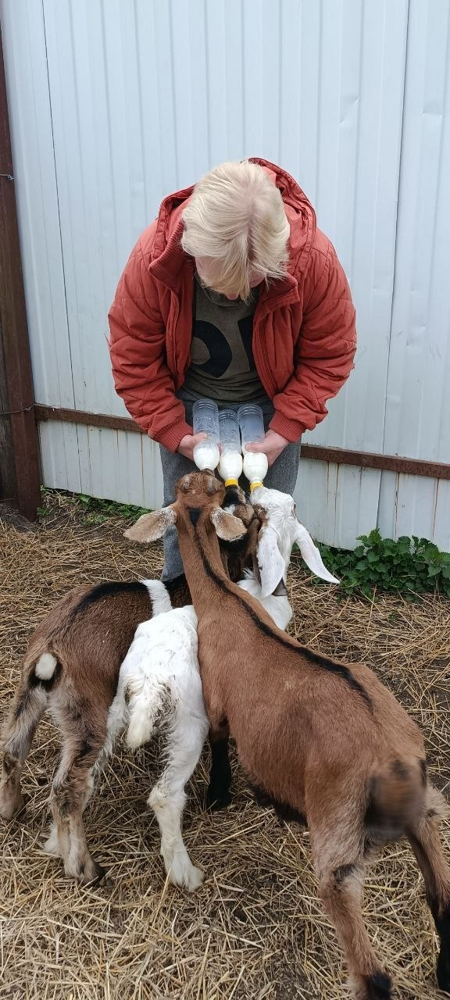
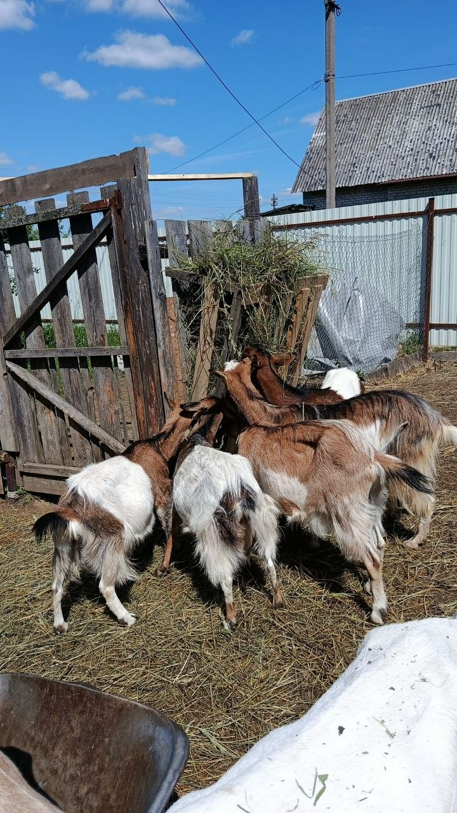

Семейное дело
Хозяйством вместе занимаются муж и жена
Семейное хозяйство · Владимирская область
Домашние продукты из козьего молока, сыры и другие деликатесы — всё, что мы делаем для своей семьи и с радостью предлагаем вам.
Доставка и самовывоз
Условия доставки уточняются лично


Хозяйством вместе занимаются муж и жена
Всё началось с появления первой козы
Заказ и наличие можно уточнить лично
Наша история
История хозяйства началась в июле 2020 года с появления первой козы. Постепенно оно росло и развивалось, а в 2025 году было официально зарегистрировано как личное подсобное хозяйство.
Владельцы хозяйства с удовольствием создают домашние продукты для своих близких и делятся ими с другими людьми.
Сделано в хозяйстве
Актуальное наличие и стоимость всегда уточняйте перед заказом.
Связаться с нами